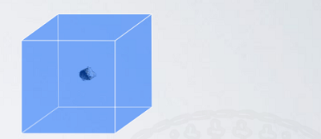
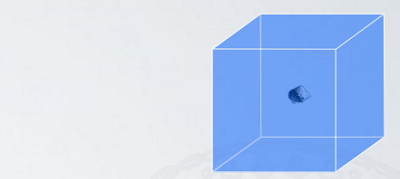
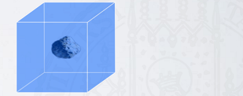
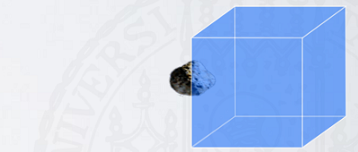
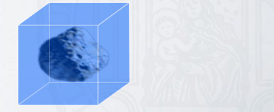
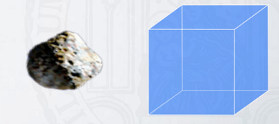

Migration
Contents
Migration#
Introduction
Intro paragraph
Notes
To Do
Think about coherent plan
Implement
Colaboration
Presentation
Page
Status:

Reviewed: ❌
Updated: 15/02/2023
Dust Dynamics within PPD#
Epstein regime …
‣ Stock number #
Note
Insert formula
‣ ‣ St < 1 #
tstop < torb
Explanation


‣ ‣ St ~ 1 #
tstop ~ torb
Explanation


‣ ‣ St > 1 #
tstop > torb
Explanation

